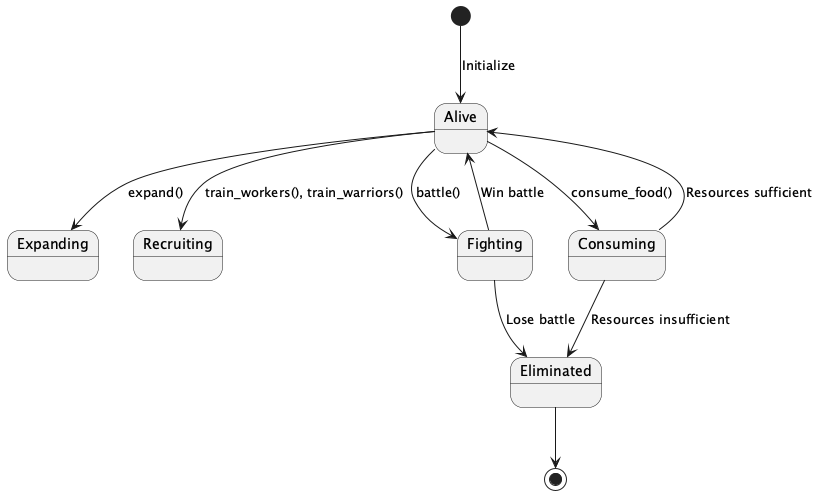

Symulacja Walki Plemion
Projekt symulacji walki plemion został zrealizowany w ramach zajęć z Programowania Obiektowego. Celem projektu było stworzenie aplikacji, która symuluje rozwój, interakcje oraz walki między plemionami na planszy. Projekt wykorzystuje zaawansowane techniki programowania obiektowego, takie jak dziedziczenie, polimorfizm, kompozycja i agregacja, aby zapewnić modularność, czytelność i łatwość rozbudowy kodu.
Skład grupy projektowej
Lider: Michał Janic
Współtwórca: Mikołaj Petek
Opis zadania symulacji
Symulacja polega na zarządzaniu plemionami, które rywalizują o zasoby, rozwijają swoje terytorium, rekrutują jednostki (robotników i wojowników), ulepszają wojowników oraz prowadzą walki z innymi plemionami. Każde plemię ma swoje unikalne cechy, takie jak liczba jednostek, siła wojowników, ilość zasobów oraz zajmowane terytorium.
Główne funkcjonalności:
Zbieranie surowców: - Robotnicy generują materiały budowlane. - Terytorium plemienia dostarcza jedzenie.
Rekrutacja jednostek: - Plemię może rekrutować robotników i wojowników, zużywając dostępne zasoby.
Rozszerzanie terytorium: - Plemię może rozszerzać swoje terytorium, jeśli posiada wystarczającą ilość materiałów budowlanych.
Ulepszanie wojowników: - Wojownicy mogą być ulepszani, co zwiększa ich siłę bojową.
Walka między plemionami: - Plemię może atakować inne plemiona, jeśli mają wspólną granicę. Wynik walki zależy od siły wojowników obu plemion.
Konsumpcja zasobów: - Jednostki plemienia zużywają jedzenie. Jeśli jedzenia jest za mało, populacja plemienia jest redukowana.
### Wyniki symulacji: Symulacja przebiega w turach, w których plemiona wykonują różne akcje. Wyniki symulacji są zapisywane w plikach CSV, a użytkownik ma możliwość wygenerowania wykresów przedstawiających rozwój plemion w czasie.
Diagramy klas
Diagram klas przedstawia strukturę projektu, w tym relacje między klasami, ich atrybuty oraz metody.
![@startuml
class Unit {
- tribe : Tribe
+ tribe : Tribe
+ food_consumption() : int
}
class Worker {
+ food_consumption() : int
}
class Warrior {
- level : int
- strength : int
+ level : int
+ strength : int
+ food_consumption() : int
+ upgrade() : bool
}
class Tribe {
- id : int
- territory : set
- workers : list
- warriors : list
- building_materials : int
- food : int
- is_alive : bool
+ add_territory(x : int, y : int)
+ add_worker()
+ add_warrior()
+ collect_resources()
+ consume_food()
+ reduce_population(deficit : int)
+ train_workers() : int
+ train_warriors() : int
+ expand() : bool
+ upgrade_warriors() : int
+ total_strength() : int
+ total_population() : int
+ perform_action() : bool
}
class Board {
- size : int
- grid : list
- tribes : list
+ place_tribe(tribe : Tribe)
+ get_random_empty_position() : tuple
+ remove_tribe(tribe : Tribe)
+ have_shared_border(tribe1 : Tribe, tribe2 : Tribe) : bool
+ battle(attacker : Tribe, defender : Tribe) : tuple
+ display_board()
}
class Simulation {
- board_size : int
- tribes_count : int
- time_per_turn : float
- board : Board
- turn : int
- simulation_data : list
- battle_log : list
+ initialize()
+ run()
+ check_collisions()
+ save_to_csv()
}
Unit <|-- Worker
Unit <|-- Warrior
Tribe *-- Worker
Tribe *-- Warrior
Board *-- Tribe
Simulation *-- Board
@enduml](_images/plantuml-32edf1f45399ef79aa5e0e73747b7606bc3c4610.png)
Diagram klas
Diagramy obiektów
Diagram obiektów przedstawia przykładową instancję symulacji, w której występują plemiona, jednostki oraz plansza.
![@startuml
object Board {
size = 20
tribes = [Tribe1, Tribe2]
}
object Tribe1 {
id = 1
territory = {(0,0), (0,1)}
workers = [Worker1, Worker2]
warriors = [Warrior1]
building_materials = 100
food = 50
is_alive = true
}
object Tribe2 {
id = 2
territory = {(5,5), (5,6)}
workers = [Worker3]
warriors = [Warrior2, Warrior3]
building_materials = 80
food = 40
is_alive = true
}
object Worker1 {
tribe = Tribe1
}
object Warrior1 {
tribe = Tribe1
level = 2
strength = 6
}
Board *-- Tribe1
Board *-- Tribe2
Tribe1 *-- Worker1
Tribe1 *-- Warrior1
Tribe2 *-- Worker3
Tribe2 *-- Warrior2
Tribe2 *-- Warrior3
@enduml](_images/plantuml-74a27f9dca960b5d3393e25dbc0386e5b58968a3.png)
Diagram obiektów
Diagramy sekwencji
Diagram sekwencji przedstawia interakcje między obiektami podczas jednej tury symulacji.

Diagram sekwencji
Diagramy maszyny stanów
Diagram maszyny stanów przedstawia cykl życia plemienia w symulacji.

Diagram maszyny stanów